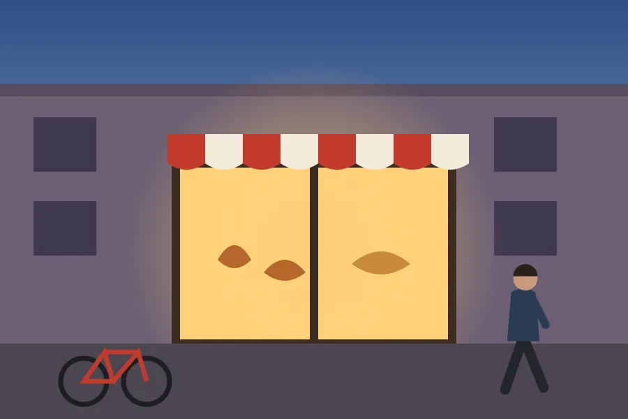
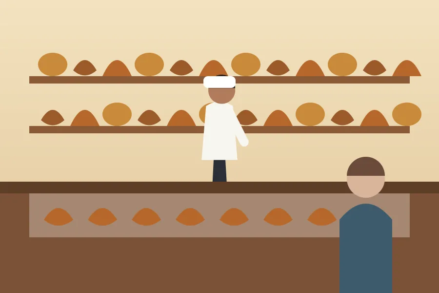
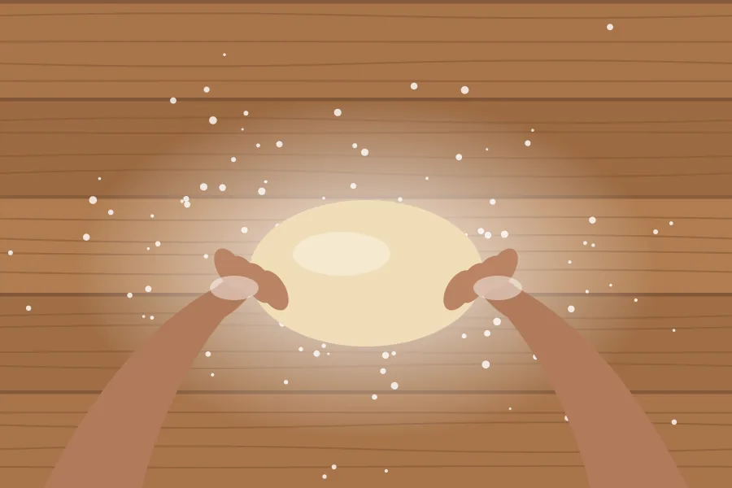
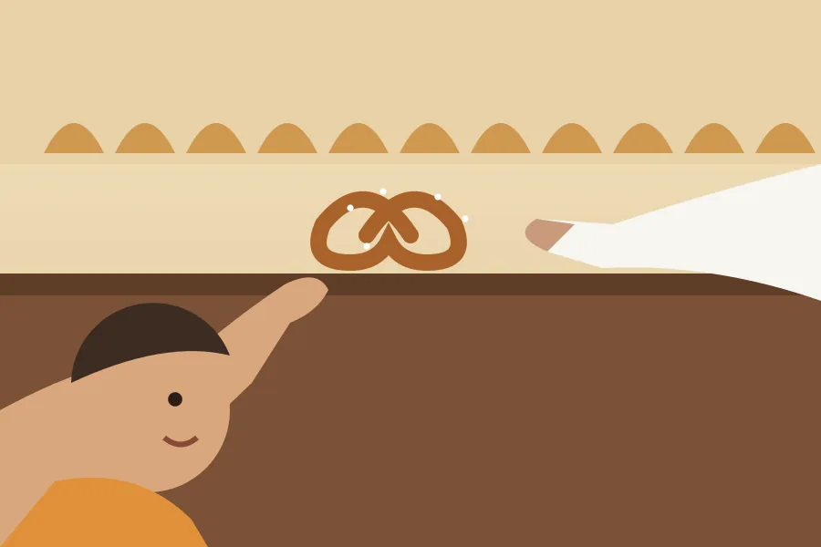
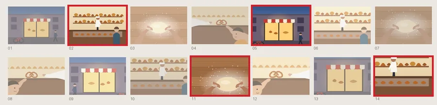

A single photo is a sentence. A series is a short story. It can follow a person through a working day or show a place across a year, and say things no single frame could. The club’s series, like Life in Germany and From the Dining Table, and the monthly themes are good places to start.
Pick a theme you can come back to
The best themes are close to home and narrower than you’d think. “Germany” is too big. “The bakery on my street before seven in the morning” is a series. Choose something you care about and can return to many times, so the pictures grow with your understanding. A simple rule helps hold the set together, like always shooting at the same time of day or from the same height.
Shoot a variety of pictures




A series needs different kinds of pictures, the way a film needs different shots. Start with a wide view that sets the scene. Move closer for people and what they do. Look for the small details that say a lot, like floury hands or a worn doorstep. Then wait for moments, a gesture or a shared look. Shoot far more than you need, and come back on different days.
Choose hard

Editing a series means choosing, and choosing means leaving out good pictures. From a hundred frames, eight to twelve is plenty. Remove near duplicates and keep only the strongest of each kind. Every picture has to add something the others don’t. Print them small or lay them out side by side on screen, and you’ll quickly see which ones belong. Then show the set to someone else, using the ideas in chapter 20.
Order and rhythm
The order changes the story. Open with a strong picture that pulls people in and close with one that feels like an ending, a door closing or the last light. In between, mix wide and close so the eye gets a rest, and put pictures next to each other that talk, through a shape or a colour. Edit them the same way, all in colour or all in black and white, with the same grading (chapter 6).
A few words
A short text helps people into a series. Give it a title and a few lines on where you were and why it mattered to you. Captions can add facts the pictures can’t show, like a name or a date. Keep the words plain and let the pictures do the talking.
Exercises
Exercises V1–V4. Tick each one off when you’ve tried it. Your ticks stay on this phone or computer.
- V1
One place, one hour
Spend an hour in one place and make twenty pictures, mixing wide views, people, details and moments. Don’t delete anything yet.
- V2
Edit down
Take the pictures from V1 and choose the best eight. Tell someone why each one stays.
- V3
Two orders
Print your eight pictures small, or lay them out on screen, and try two different orders. Notice how the story changes.
- V4
A club series
Add five connected pictures to one of the club’s series, with a short text about them.
Photography Handbook, © 2026 Samskara Photo Club. Text and illustrations are licensed under CC BY-NC-SA 4.0. You may share and adapt them for non-commercial use if you credit the club and share your version under the same licence. Commercial use needs the club’s permission. The club logo is not covered by the licence.